Огляди · журнал «ДентАрт» 2018 №1
Філософія ортотропії
THE PHILOSOPHY OF ORTHOTROPY
Ольга Козик,віце-президент Всеукраїнської асоціації міофункціональної терапії, провідний ортодонт стоматологічної клініки Smart Dental (м. Вінниця, Україна)
Почнімо з визначення. Ортотропія (Orthotropics) – від слів orthos – правильний і tropic – ріст, – наука про правильний ріст. Лицьова ортотропія (Facial Orthotropics) – наука про правильний ріст лиця. Засновником і донині головним подвижником науки ортотропії є британець Джон Мью. І за його визначенням, ортотропія – це мислення, що виходить за межі стоматології.
Ортотропія відповідає на питання:
- чому сучасні щелепи менші?
- чому ми ростемо більш вертикально?
- як це впливає на обличчя і зуби?
- як ми можемо переспрямувати вертикальний ріст на горизонтальний?
Гіпотеза ортотропії: м'яка їжа і відкритий рот посилюють вертикальний ріст. Це створює скелетні патології прикусу з оклюзійними характеристиками, які визначаються м'язовими патернами (Джон Мью, 1989). Порушення можуть бути генетичними, але вони визначаються умовами життєдіяльності.
Більшість дітей має такі самі патології оклюзії, як і їхні батьки. Вони не обов'язково мають бути успадковані. Це залежить від умов життєдіяльності.
Наші предки, живучи в первісно-общинному ладі, в основному мали рівні зуби. Але в сучасному суспільстві «викривлення зубів» уже має ознаки тенденції і спостерігається більш ніж у 90% жителів індустріальних країн. Перші ознаки того, що зуби почали скупчуватися, ми бачимо 50 тис. років тому, коли люди почали готувати їжу на вогні, організовуватися в селища. Близько 500 років тому ми починаємо бачити скелетні порушення співвідношень між щелепами. Як не дивно, сучасне життя впливає на форму і ріст щелеп: у деяких штатах Індії у багатих людей у п'ять разів частіше зустрічається патологічно зменшене підборіддя, ніж у людей із малозабезпечених верств населення.
Від народження будь-яка дитина має всі підстави для того, щоб не мати патології прикусу, мати правильні пропорції обличчя. Але такі шкідливі звички, як постійно відкритий рот, смоктання великого пальця або язика, неправильне положення язика і неправильне ковтання, маленьке жувальне навантаження призводять до вертикального типу росту лиця. Обличчя дітей можуть сильно відрізнятися від лиць їхніх батьків. Зростаюче обличчя – це дуже рухома і пластична структура, і навіть незначний, на перший погляд, тиск на зуби і кістку язиком або губами може згодом стати причиною значних деформацій. Напевно, багато хто хоч раз помічав, як симпатична дитина у процесі росту перетворюється на непропорційно складеного і некрасивого підлітка, але майже ніхто не може пояснити, чому так відбувається.
Мета ортотропії – допомогти батькам і лікарям розпізнати момент, коли у дитини починається неправильний ріст, і зрозуміти, що можна зробити для того, щоб не допустити розвитку патології.
Чотири найважливіші чинники, що впливають на розвиток щелепи і обличчя:
- силова дія м'язів обличчя на зубні дуги;
- положення язика і правильність ковтання;
- носове дихання;
- жувальне навантаження.
Лише два основні чинники на 90% визначають, наскільки пропорційним оточення буде сприймати наше обличчя:
- форма облич батьків;
- домінуючий тип росту обличчя: вертикальний чи горизонтальний.
Ми не можемо змінити генетично успадковану від батьків форму обличчя. Але щодо другого фактора, ми можемо його коригувати, і тут ортодонти визначають два типи росту: сприятливий – горизонтальний, і несприятливий – вертикальний.
Сприятливий ріст
Горизонтальний тип росту асоціюється з красивою зовнішністю: правильне взаєморозташування і взаємовідношення щелеп, рівні зубні дуги.
Несприятливий ріст
Вертикальний тип росту фізіологічно нефункціональний, утворює ротацію нижньої щелепи, внаслідок чого формуються маленьке або завелике підборіддя, криві зуби, пласке обличчя, порушення постави.
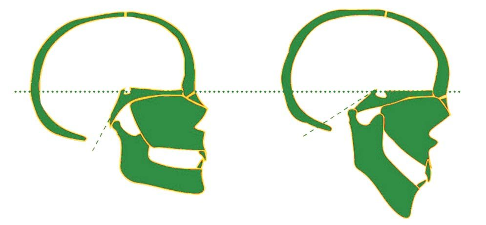
З естетичної точки зору, вертикальний ріст порушує пропорції обличчя, роблячи його як мінімум негарним, що часто пов'язано з психологічним моментом (комплексами підлітків з приводу своєї зовнішності і зубів, які стирчать).
Вертикальний ріст обличчя змушує щелепу розташовуватися позаду і змінювати розміри і топографію тканин горла (нахилена назад голова заважає нормально дихати). Для полегшення дихання, у свою чергу, дитина постійно закидає голову назад (спробуйте закинути голову, і ви побачите різницю). Для відновлення балансу спини шия намагається зігнутися вперед. На думку остеопатів і фізіотерапевтів, подібне патологічне викривлення всього хребта – одна з причин головного, шийного болю і хронічних проблем зі спиною.
Генетично обумовлений обсяг росту кістки ми змінити не можемо, але ми можемо спрямувати цей обсяг росту в правильне русло (переспрямувати з вертикального типу в горизонтальний). У 70% пацієнтів уже у 5 років можна спостерігати неправильний тип росту.
Ремоделювання кістки (резорбція і опозиція) відбувається все життя. Кістка змінює свою форму, але не обсяг! Це стосується як верхньої, так і нижньої щелеп. На рис. 1 проілюстровано однаковий обсяг кістки нижньої щелепи з різним напрямком росту. Чим глибша виїмка під кутом нижньої щелепи, тим більше виражений вертикальний тип росту (рис. 2).
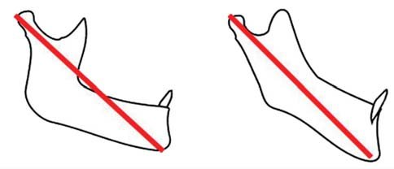
Звичка тримати рот відкритим – напевно, найважливіший стимулюючий фактор. Постійно відкритий рот сприяє росту обличчя вниз, що у майбутньому може навіть призвести до нездатності повністю змикати губи. Якщо ж тримати рот постійно зімкнутим, то кістки щелеп виростуть правильно, обличчя буде гармонійним, а зуби – рівними.
Ми насправді не усвідомлюємо, що тримаємо рот відкритим набагато довше, ніж нам здається. Фізіологічно оптимальним є дихання носом, тому слід його всіляко заохочувати. На жаль, до тих пір, доки дитина не навчиться постійно тримати рот зімкнутим, лікування триватиме дуже довго, а проблема все одно не усунеться до кінця (з дуже великою ймовірністю рецидивів). Але в разі успішного досягнення правильного росту щелеп він стане запорукою краси і гармонії обличчя без необхідності видалення зубів.
Основні причини відкритого рота:
- закладений ніс; набряк може бути викликаний алергією, ГРВІ, ЛОР захворюваннями з непрохідністю носових дихальних шляхів;
- звичка дихати ротом;
- слабкість навколоротової мускулатури; попросіть пацієнта порахувати, якщо він змикає губи тільки при вимові звуку «М», це вже ознака слабкості навколоротової мускулатури; губи повинні змикатися практично після кожного вимовленого слова. Попросіть пацієнта порахувати вголос до п'яти і поспостерігайте за відстанню між губами після слова «п'ять». Не бажано, щоб відстань була більшою, ніж 3 мм.
Положення язика і правильність ковтання
Язик при ковтанні виробляє силу близько 500 г. Людина робить щонайменше 1000 актів ковтання на добу (тиск як мінімум 500 кг на добу).
На рис. 3 показано різні позиції язика:
- Позиція язика при ідеальній оклюзії. Язик усім тілом прилягає до піднебіння.
- Позиція язика при легкій скупченості: язик уже не прилягає до склепіння піднебіння, а лише до бічних його частин, а також тисне на коронки верхніх премолярів і молярів.
- Позиція язика при сильній скупченості. Язик майже ніколи не сягає піднебіння. Він упирається в піднебінні поверхні нижніх і верхніх молярів та премолярів.
- Позиція язика при глибокому або відкритому прикусі. Язик прокладається між зубами верхньої і нижньої щелеп. Це може відбуватися в різних ділянках щелеп. І в цьому випадку часто спостерігаються відбитки від зубів на язиці.
- Позиція язика при мезіальному прикусі. Язик лежить на дні ротової порожнини, упирається в коронки нижніх зубів, при цьому висуває нижню щелепу вперед. Це той випадок, коли утворюється замкнене коло. Піднебіння занадто вузьке для того, щоб там помістився язик. І як би пацієнт не намагався, він не зможе цього зробити. Тому саме в такій клінічній ситуації потрібно спочатку провести розширення верхньої щелепи, щоб дати простір язикові. А після цього взятися до міофункціональної і дихальної терапії з пацієнтом, щоб язик знову не висував нижню щелепу вперед.
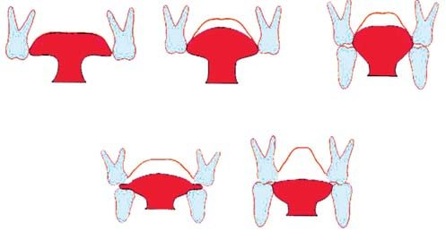
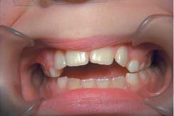
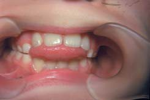
Фото 1. Неправильна позиція язика під час ковтання.
Вимова звуків
Під час вимовляння багатьох звуків язик у нормі міститься на піднебінні, але якщо він прокладається між передніми або бічними зубами, що проявляється при розмові як шепелявість, то зуби напевно будуть змінювати своє положення на неправильне. Також у нормі губи повинні змикатися практично після кожного вимовленого слова.
Звички смоктати або ковтати з прокладанням язика між зубами можуть також деформувати зуби і щелепи і навіть бути причиною мовних дефектів. Пам'ятайте про те, що положення зубів безпосередньо залежить від губ, язика і щік і що будь-які неправильні постійні рухи можуть порушити позицію зубів і, як результат, – змінити пропорції обличчя.
Жувальне навантаження
Уникання твердої їжі багатьма дітьми не дає розвиватися жувальним м'язам і провокує вертикальний ріст. Подібні погані звички формуються вже з того моменту, як дитину відлучили від грудей. До 15 місяців у малюка ще не виробився правильний рефлекс ковтання, він уміє тільки смоктати. Якщо його відлучили від грудей раніше цього віку, годували ложкою, є велика ймовірність того, що він при ковтанні буде прокладати язик між зубами. Мамам це відомо не з чуток, оскільки при годуванні дитини доводиться постійно зішкрябати кашкоподібну їжу навколо рота. Потрібно намагатися привчити дитину пережовувати тверду їжу і не годувати її рідкою їжею до того, доки вона не навчиться правильно ковтати. Але не слід доходити до крайнощів у дотриманні цих правил, щоб не перестаратися і не призвести до зворотного ефекту. Також слід пам'ятати, що при грудному вигодовуванні стимулюється зона між твердим і м'яким піднебінням, саме це впливає на розвиток м'язів язика (соска такого ефекту не дає).
Як розпізнати вертикальний ріст?
1. Внутрішньоротові ознаки
Збільшений об'єм ясен. Обличчя має естетичний вигляд, коли при усмішці видно весь верхній ряд зубів і близько міліметра-двох ясна над ним. Але чим більше видно ясенний край, тим менш привабливою здається усмішка. Якщо у дитини при усмішці значно оголюються ясна – можна припустити виражений несприятливий вертикальний тип росту.
Індикаторна лінія. Де повинні міститися зуби? Для того, щоб виміряти правильне розташування верхніх різців, потрібно відміряти відстань від крайньої точки кінчика носа до нижнього краю верхніх різців. Ідеально, якщо відстань становить 28 мм у 5 років і збільшується на 1 мм з кожним роком до статевої зрілості, коли вона повинна становити 36 мм для дівчаток і 38 – для хлопчиків.
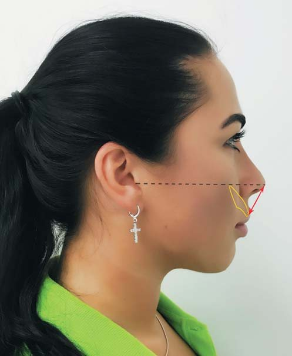
| Вік | Відстань |
|---|---|
| 5 років | 28 мм |
| 6 років | 29 мм |
| 7 років | 30 мм |
| 8 років | 31 мм |
| 9 років | 32 мм |
| 10 років | 33 мм |
| 11 років | 34 мм |
| 12 років | 35 мм |
| 13 років | 36 мм |
| 14 років | 37 мм |
| 15 років | 38 мм |
Середній показник у дітей в розвинених країнах на 3-4 мм більший, ніж наведені норми. Якщо відстань відрізняється більше, ніж на 5 мм, мають місце порушення в рості і розташуванні зубів і зміна пропорцій обличчя. Якщо ж відстань більша, ніж 8 мм – це пряма ознака вертикального типу росту, і дитина буде мати негарне обличчя, коли виросте.
Простір. Фізіологічно зумовлено, що до 5 років у дитини повинні утворюватися проміжки між зубами. Зміна молочних зубів на постійні відбувається з 6 років, і в разі відсутності місця для їх прорізування вони неминуче будуть рости у вимушеному викривленому положенні. Набагато простіше скоригувати ріст до прорізування всіх зубів шляхом створення додаткового потрібного місця в зубному ряду, ніж потім, будучи обмеженим у можливостях і в місці, вирівнювати криві зубні дуги.
Скупченість. Якщо у дитини до 6 років спостерігається скупченість у передніх нижніх зубах, це є показанням до установки апарата для розширення щелепи і переспрямування вертикального росту в горизонтальний.
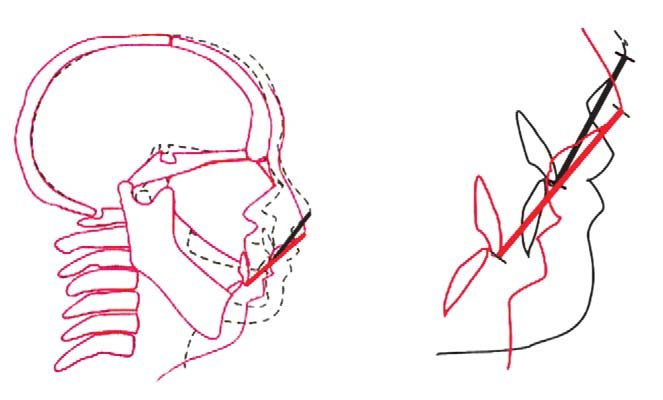
2. Лицьові ознаки
Обличчя має рости вперед, по колу, тоді всі зуби будуть розташовуватися рівно. Якщо лице росте вниз, тоді всі зуби розташовуються скупчено. Щоб оцінити профіль пацієнта, треба попросити його подивитися в дзеркало, дивлячись собі в очі. Якщо пацієнт не дивиться собі в очі, він завжди компенсує свій профіль положенням голови. Ступінь незмикання губ засвідчує, наскільки нижня щелепа зміщена вниз.
Непривабливі очі. Якщо верхня щелепа росте не вперед, а вниз, то очі робляться немовби витрішкуваті, і зовнішній кут очей буде опущений вниз, надаючи обличчю сумно-втомленого виразу і відкриваючи незвично велику кількість очного білка. Нижня повіка звисатиме мішком замість того, щоб плавно переходити в щоку. Контур під повікою свідчить про те, що очне яблуко погано підтримується кістковими структурами. Щічна лінія – дотична до щоки – повинна бути паралельною спинці носа. Збільшені щічні м'язи спостерігаються у пацієнтів, які прокладають язик між зубами.
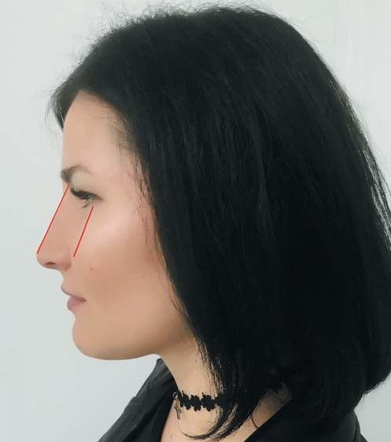
Слабке підборіддя. Подивіться на профіль дитини, якщо вона постійно тримає рот відкритим, то підборіддя буде подвійним і зміщеним назад. У той же час не слід забувати про те, що підборідний м'яз не повинен брати участі в акті ковтання. Потрібно вчити пацієнта ставити палець на підборіддя і контролювати, щоб в акті ковтання воно не брало участі.
Висунуте вперед підборіддя. Метушливі діти можуть страждати від гіперактивного росту нижньої щелепи, особливо якщо у них є звичка висувати її вперед і рухати нею з боку в бік. Такий агресивний ріст щелепи дуже складно коригувати, коли дитина вже виросла.
Що робити?
Найліпша пора для лікування – 6-8 років. Але братися до компенсаторного лікування можна і в 30 років. Хоча, безумовно, ступінь порушення у молодших пацієнтів менший, ніж у старших.
Роблячи щодня прості процедури, як наприклад, вправи для язика, сон із заклеєним паперовим пластирем ротом і контроль за закритим ротом протягом дня, можна допомогти щелепам вирости правильно.
Часто простий апарат для розширення верхньої щелепи здатний дати такий самий ефект, як і видалення мигдаликів: це відбувається тому, що носові ходи, які, по суті, тісно пов'язані і прилягають до верхньої щелепи, у міру розкручування апарата розширюються разом з нею, дозволяючи дихати вільніше. Але критично важливо активувати апарат на півоберта щодня, саме такий режим активації дає розкриття серединно-піднебінного шва у всіх пацієнтів до завершення пубертатного періоду і в 2-х з 3-х випадків – опісля. Першочерговою підставою для цього розширення є поліпшення естетики лиця за допомогою розкриття шва. Це веде до того, що вся верхня щелепа переміщується вперед, що забезпечує очевидні поліпшення естетики у середній третині обличчя і довготермінову стабільність.
Не слід відразу ставити пацієнтові брекети, не проаналізувавши уважно ширину його верхньої щелепи. Адже тільки апаратом для розширення верхньої щелепи (це може бути, наприклад, Bioblock або BiHelix) можна контролювати горизонтальну площину. При цьому не слід витягати верхню щелепу по вертикалі, ускладнюючи ситуацію пацієнта. Однак результат лікування буде знівельовано, якщо м'язи і язик працюють неправильно і пацієнт дихає ротом.
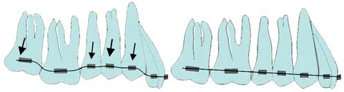
Факти про красиві обличчя
- Потенційна схильність вчинити злочин спостерігається частіше у некрасивих людей: чотири з п'яти підсудних жінок розцінювалися як некрасиві;
- злочинці, які зробили пластичну операцію, набагато рідше опиняються повторно за ґратами;
- люди, які мають гарний вигляд, чомусь вважаються розумнішими. Цю дивовижну закономірність можна теоретично пояснити тим, що симпатичні діти в школі отримують більше уваги з боку вчителів. Також їм набагато легше одержати хорошу роботу, швидше просуватися кар'єрними сходинками і заробляти більше грошей.
З усього сказаного вище випливає, що для успішного лікування достатньо розширити верхню щелепу, навчити пацієнта дихати носом, поставити у правильну позицію язик. Але якщо з розширенням верхньої щелепи ортодонт може впоратися за допомогою апаратури, то сказати пацієнтові: дихайте правильно, ковтайте правильно, розмовляйте правильно – це все одно, що сказати рибі: біжи!
Потрібно не просто пояснити пацієнтові, що означає правильно ковтати, розмовляти і просто жити з язиком, що торкається піднебіння, наше завдання – закріпити це на рівні рефлексу, тобто перевести звичку в підсвідомість. Також ми прагнемо налагодити носове дихання. Ми повинні перезавантажити дихальний і ковтальний мозкові центри пацієнтів. У них мають бути переналаштовані патерни (схеми роботи) м'язів, які беруть участь у ковтанні, – усунення синдрому низького положення язика (глосоптоз), вперше описаного П'єром Рабеном у 1923 році.
Не варто дуже покладатися на дію «заслінки» для язика. Адже язик тільки перші дні «тікає» від «заслінки». Уже через кілька днів він знову знаходить своє старе положення, огинаючи перешкоду. При цьому опускається ще нижче і ускладнює клінічну картину.
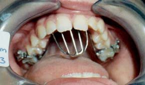
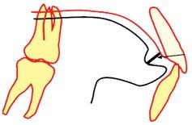
Фото 4. Використання «заслінки» для язика.
Користуючись європейським досвідом, ми створили Всеукраїнську асоціацію міофункціональної терапії, підрозділ якої Академія Краса в здоров'ї – навчальний заклад, який працює з пацієнтами, котрим потрібне «перезавантаження» дихального і ковтального центрів. Завдяки заняттям у пацієнтів повністю відновлюється носове дихання, а також усі м'язи голови і шиї функціонують правильно. Звичайно ж, ортодонтичне лікування у таких пацієнтів відбувається швидше і легше. А результати підтримуються правильною роботою м'язів і носовим диханням.
Висновки
Що створює рівні зуби і гармонійне обличчя? Правильна позиція язика, його положення на піднебінні, губи легко зімкнуті, і зуби верхньої і нижньої щелеп перебувають у легких контактах. Саме таким чином сила м'язів язика підтримує і виштовхує верхню щелепу вперед, змушуючи її рости.
Література
- Mew, JRC. The Incisive Foramen – A Possible Reference Point. Brit. J. Orthod. 1:4. 143-146. 1974.
- Mew, JRC. Profile Radiographs – A Simplified Technique. Brit. J. Orthod. 2:2. 119-120. 1975.
- Mew, JRC. Statistics and Caries Research. Probe. 19: 166. 1977.
- Mew, JRC. A Case Report. Facial differences between 19 year old monozygote twins associated with a lip sucking habit, and the changes which followed orthopaedic treatment. Int. J. Orthod. 15: 6-10. 1977.
- Mew, JRC. Semi-Rapid Expansion. Brit. Dent. J. 143: 301-306. 1977.
- Mew, JRC. Bio-Block Therapy. Am. J. Orthod. 76 29-50. 1979.
- Mew, JRC. Orthodontics or Orthopaedics? Dent. Prac. April 1981.
- Mew, JRC. The Aetiology of Malocclusion – Can the Tropic Premise Assist our Understanding? Brit. Dent. J. 151: 296-302. 1981.
- Mew, JRC «Tongue Posture». Brit. J. Orthod. 8: 203-211. 1981.
- Squiers, R, & Mew, JRC. The Relationship between Facial Structure and Personality Characteristics. Brit. J. Soc. Psychol. 20: 151-160. 1981.
- Mew, JRC. Relapse Following Maxillary Expansion: A Study of 25 Consecutive Cases. A.M. J. Orthod. 83: 56-61. 1983.
- Mew, JRC. Facial Form, Head Posture and the Protection of the Pharyngeal Space - The Clinical Alteration of the Growing Face. J.A. McNamara, K.A. Ribbens & R.P. Howe (Eds) Monograph 14, Craniofacial Growth Series, Centre for Human Growth and Development, University of Michigan. 1983.
- Mew, JRC. The Biobloc Technique – Ten Consecutive Cases. Dent. Prac. 22: 4. 5-10. 1984.
- Mew, JRC. Factors Influencing Maxillary Growth. Nova Acta Leopoldina, NF 58 Nr 262, 189-195. 1986.
- Mew, JRC «Factors Influencing Mandibular Growth» Angle Orthod. 56: 1. 31-48. 1986.
- Mew JRC. Biobloc Therapy. Published by the author and printed by Flo-Print, Tunbridge Wells, UK 1986.
- Mew JRC. Biobloc Treatment. Int. J. Orthod. 23 9-12. 1986.
- Mew JRC. Facial Change Induced by Treatment. Funct. Orthod. 4: 37-43. 1987.
- Mew JRC. A Class II, Division 2, Malocclusion Corrected in 41 Days. Funct. Orthod. 5: 3 17-25. 1988; Mew JRC. A personal View of Oral Myofunctional Therapy in Britain. International Journal of Orofacial Myology. 15: 15-16. 1989.
- Mew JRC. Biobloc Philosophy. Dent. Prac. March 1989.
- Mew JRC. Use of the Indicator Line to Assess Maxillary Position. Funct. Orthod. Vol:8, 1. 29-32. 1991.
- Mew JRC. Middle Ear Effusion: An Orthodontic Perspective. Journ. of Laryngology and Otology. Vol.106, 7-13. January 1992.
- Mew JRC. Orthotropics – Natural Growth Guidance. Journ. of Alternative & Complementary Medicine. Vol:11: 8-11. February 1993.
- Mew, JRC. Suggestions for Forecasting and Monitoring Facial Growth. Am. J. Orthod. & Dentofacial Orthop. 104: 105-120. 1993.
- Mew, JRC. Orthodontic Classification – Time to Revise? Newsletter of the Australian Association of Orofacial Orthopaedics. p.12-13. August 1993.
- Mew, JRC. The aetiology of temporomandibular disorders: a philosophical overview. European Journal of Orthodontics. 19:249-258. 1997.
- Trenouth, M & Mew, J. A Cephalometric Evaluation of Four Different Methods of Orthodontic Treatment. Cranio. 6: 16-24. 1997.
- Mew, JRC. Facial changes in a series of identical twins treated by different orthodontic techniques. Under review by the European Journal of Orthodontics. 1998.
- Mew, JRC. The postural basis of malocclusion. A philosophical overview. Under review by the Angle Orthodontist. 1998.
- Mew, JRC. The assessment of facial beauty. Under review by Journal of Community and Applied Social Psychology. 1998.
- Mew, JRC. The aetiology of temporomandibular disorders: a philosophical overview. Japanese Journal of Orthodontic Practice. 7:61-72. 1998.
- Mew, JRC. Teoria y practica del tratamiento con Biobloc. Bases y casos clinicos Ortodoncia Clinica. 1:18-26. 1998.